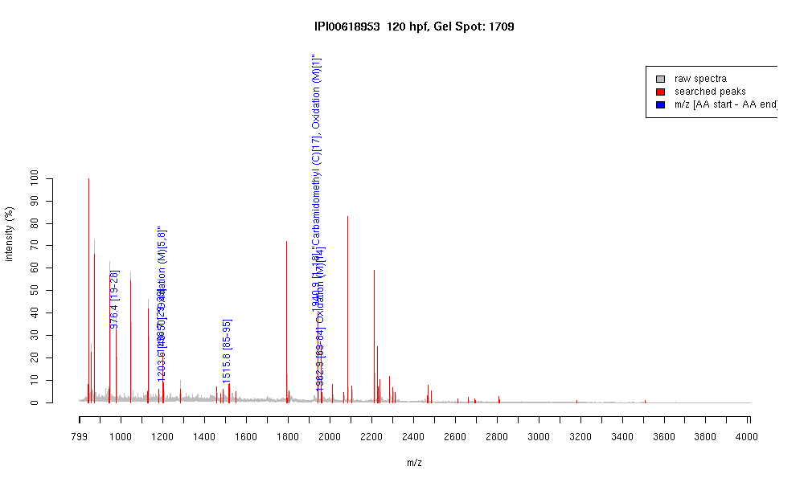

| Name | PREDICTED: similar to beta-cytoplasmic actin2 isoform 2 |
|---|---|
| MW | 15553.7 |
| PI | 5.92 |
| Mascot Protein Score | 79 |
| Masses (matched / unmatched) | 6 / 58 |

| Peptide | MZ (calc) | MZ (observed) | Error (DA) | Error (PPM) | Start | Stop | Modifications |
|---|---|---|---|---|---|---|---|
| AGFAGDDAPR | 976.4482 | 976.4495 | 0.0013 | 1 | 19 | 28 | |
| AVFPSIVGRPR | 1198.7054 | 1198.7042 | -0.0012 | -1 | 29 | 39 | |
| HQGVMVGMGQK | 1203.5609 | 1203.5956 | 0.0347 | 29 | 40 | 50 | "Oxidation (M)[5,8]" |
| IWHHTFYNELR | 1515.7491 | 1515.7507 | 0.0016 | 1 | 85 | 95 | |
| MDDEIAALVVDNGSGMCK | 1940.8398 | 1940.9338 | 0.094 | 48 | 1 | 18 | "Carbamidomethyl (C)[17], Oxidation (M)[1]" |
| YPIEHGIVTNWDDMEK | 1962.8903 | 1962.9335 | 0.0432 | 22 | 69 | 84 | Oxidation (M)[14] |